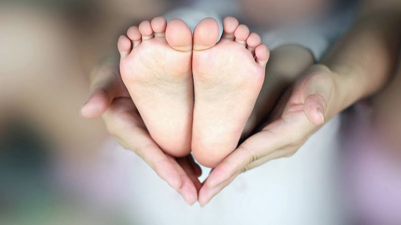

Refleksoterapia u dzieci
Dzieci zdecydowanie szybciej reagują i wracają do równowagi w wyniku refleksoterapii niż dorośli. Przepływ energii u dzieci jest łatwiejszy do odblokowana a właściwa równowaga zostaje szybciej przywrócona. Dzieci niosą za sobą mniejszy bagaż doświadczeń a ich schorzenia są dość nowe i nie zdążyły jeszcze wyrządzić tak dużej szkody jak w przypadku starszych osób.
Efekty
- Wzmacnia układ odpornościowy
- Wspomaga rozwój fizyczny i umysłowy
- Łagodzi drażliwość, napady złości i inne problemy emocjonalne
- Pomaga w leczeniu alergii, trądziku młodzieńczego i problemach skórnych
- Wspomaga trawienie, reguluje apetyt i procesy przemiany materii
- Pomaga przy dziecięcych kolkach, refluksach i zaparciach
- Poprawia jakoś snu i łagodzi jego zaburzenia
- Działa przeciwbólowo np.: przy ząbkowaniu
- Redukuje infekcje ucha
- Wspomaga przy kolkach, infekcjach, również jelitowych, przeziębieniu,
grypie i kaszlu
